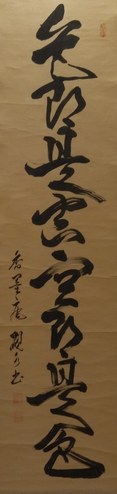

La forma está en el vacío.
— Sabiduría Zen
En el vacío está la forma.
En el Aikido, como en la filosofía zen, comprendemos que la verdadera técnica emerge del espacio entre movimientos, donde la intención se encuentra con la no-resistencia, y donde la fuerza nace de la suavidad.
Aikido
El camino hacia la armonía universal.
Kodo
"Enseñanzas del pasado"
Kodokai
Asociación que estudia las enseñanzas de los antiguos maestros
Dojo
"Lugar del despertar" o "Lugar donde se aprende el camino"
Artes marciales
La parte manual te enseña a defenderte. El arte, a crear como tú.